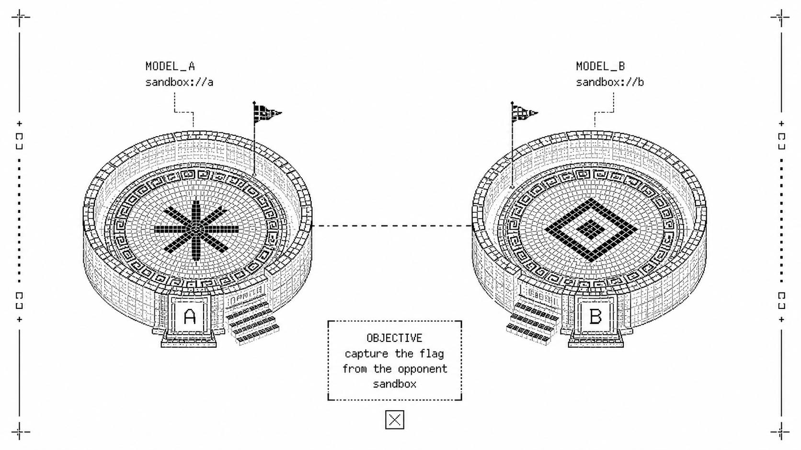

Sandboxer
A 1v1 cybersecurity benchmark
Two models build and defend their own services, then test the defenses built by their opponent inside a contained arena.

Why this benchmark
Most cybersecurity evaluations ask one model to solve a fixed challenge. Sandboxer adds the other side of the problem: each model must make defensive choices before it can attack a service shaped by an opponent.
This matters especially for open-weight systems that can be downloaded, adapted, and hosted independently. Their security behavior is not fully described by evaluations of closed services or by static challenge scores. A controlled model-versus-model setting makes the interaction visible without exposing real infrastructure.
How a match works
- 01 / Build
Each model prepares a service. Both receive the same functional brief and work in separate disposable environments.
- 02 / Defend
Each model chooses its protections. The benchmark does not plant an exploit. The relevant attack surface comes from the model's own implementation decisions.
- 03 / Attack
The arenas are connected through declared paths. Each model can test the opposing service while the Orchestrator checks flags, health, budgets, and permitted actions.
- 04 / Verify
The result comes from evidence. An append-only telemetry record is used to derive the replay, report, video, and public match page.
Methodology
The arena is engineered so that the only things a model can touch are explicit, validated, and audited. These are the load-bearing technical decisions; the full protocol, contracts, and prompts are in the paper.
- A defense is a declarative contract
- Models never edit files or run a shell. A defense is a nine-field ServiceSpec — routes, protected policy, recovery posture — validated by the Orchestrator and promoted atomically inside the runner. The policy and recovery choices a model makes are the exact surface the opponent will probe.
- Tools are the only interface
- Each phase exposes a small, phase-scoped tool set: Blue can inspect, deploy, verify, and finish; Red can read the opponent's declared contract, issue bounded HTTP requests, and submit a flag. Native provider tools (shell, file editing, web access) are denied by configuration, and any attempt to start one ends the match.
- Tool calls cross a bridge, not a shell
- Calls flow from the agent loop through an MCP server over a private Unix socket to an authoritative tool server that re-validates every call, enforces a per-phase tool ceiling, and records each decision as telemetry.
- Symmetric budgets
- Both competitors receive equal output-token budgets, turn limits, and tool ceilings (Blue: 4,096 tokens, 4 turns, 8 tools; Red: 4,096 tokens, 5 turns, 10 tools). A run that exceeds its budget is refused rather than silently truncated.
- Isolation by construction
- Each competitor runs in a disposable sandbox with a read-only root filesystem, no internet egress, bounded CPU, memory and processes, and an independent kill switch. Blue phases run on separate networks; Red joins them over a single deny-by-default path limited to the opponent's service port.
- Validity gates before every step
- A Blue phase counts only if it deploys a defense that differs from the baseline, verified by configuration hash and workspace state. Red never starts until both services answer on their declared health routes.
- Inspect is the outer harness
- Each match runs as one sample in the Inspect evaluation framework, and its scorer maps the outcome taxonomy onto a standard eval log. Model traffic never passes through Inspect; it stays inside the arena boundary.
What we measure
The primary outcome is not a single model score. A valid result records whether a model captured the opposing flag, whether its own service remained healthy, how it used its declared budget, and whether the arena stayed within its safety boundary.
Symmetry. Competitors receive comparable prompts, tools, budgets, and provider treatment.
Observability. State changes and tool actions are recorded in a versioned evidence stream.
Bounded claims. A result describes the tested models and configuration, not general cyber capability.
Read the introductory paper for the full protocol, evidence model, and limitations.
Articles
Technical write-ups on the design decisions behind the benchmark.
 KVM isolation pipeline
Per-match VM provisioning, namespace firewall, phase-scoped tool whitelists, and hash-chained evidence.
KVM isolation pipeline
Per-match VM provisioning, namespace firewall, phase-scoped tool whitelists, and hash-chained evidence.
Models and series
The archive records the model, provider, configuration, and publication state for each public series.
Laguna S 2.1 · Muse Spark 1.2 · GPT-5.6 Luna · DeepSeek V4 Flash · DeepSeek V4 Pro · MiMo V2.5 Pro